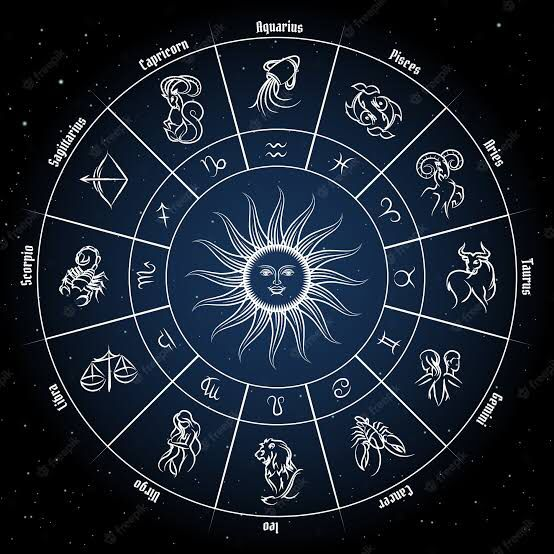

DESTAQUES

Astrologia
Astrologia é uma pseudociência que estuda os corpos celestes e as prováveis relações que possuem com a vida das pessoas e os acontecimentos na Terra. A raiz etimológica desta palavra se originou a partir da junção dos termos gregos astron, que significa “estrela” ou “astros”, e logos, que quer dizer “estudo”.
CONHEÇA A ASTROLOGIA
Curiosidade:
A palavra zodíaco é de origem grega e significa “círculo de animais”.
LEIA MAISVeja alguns vídeos sobre Astrologia:
CONHEÇA A ASTROLOGIA
Curiosidade:
Na época do surgimento do zodíaco, o primeiro signo do calendário era touro.
LEIA MAISVeja alguns vídeos sobre Mapa Astral: